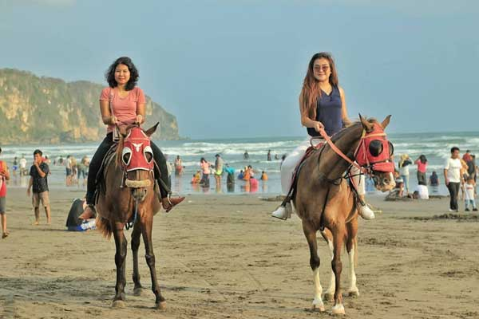
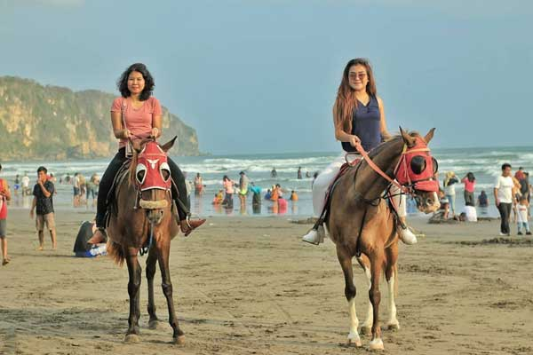

Beranda
Kontak
Tentang
Tour Guide

Pantai Parangtritis
Pantai Parangtritis
Lokasi
Harga
Foto
 

Ulasan

Jl. Pantai Parangkusumo, Pantai, Parangtritis, Kretek, Bantul, Daerah Istimewa Yogyakarta, Indonesia, 55772
Keterangan
Harga
Rp10.000
Rp100.000 / 30 menit
Rp50.000 / 30 menit
Rp70.000
Rp30.000
Rp10.000
Rp3.000
Tiket Masuk Pantai
Fasilitas Andong
Penyewaan Motor ATV Besar
Penyewaan Motor ATV Kecil
Fasilitas Sandboarding
Parkir Roda Empat
Parkir Roda Dua

Andi123

Tempat yang sangat menarik untuk dikunjungi, lokasi yang strategis dan juga pemandangan yang indah cocok untuk liburan dengan teman maupun keluarga.

Andi123

Tempat yang sangat menarik untuk dikunjungi, lokasi yang strategis dan juga pemandangan yang indah cocok untuk liburan dengan teman maupun keluarga.

Andi123

Tempat yang sangat menarik untuk dikunjungi, lokasi yang strategis dan juga pemandangan yang indah cocok untuk liburan dengan teman maupun keluarga.


2023 WebCrafters